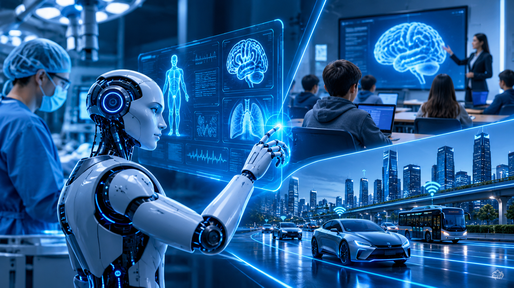
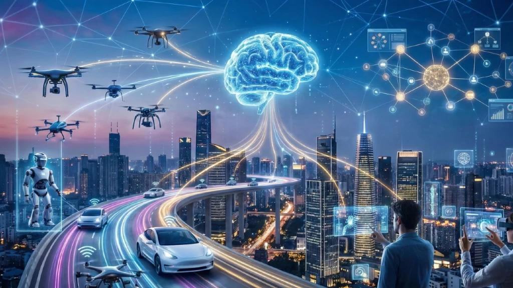

Artificial Intelligence Is Shaping Tomorrow
Artificial intelligence is becoming one of the most influential technologies of our time. From intelligent assistants to advanced scientific research, AI is changing how peaple work, learn and interact with technology.
Introduction
Artificial Intelligence is transforming the modern world. From smart assistants to advanced technologies, AI is changing how peaple work, learn and interact with technology.Artificial Intelligence is transforming the modern world. From smart assistants to advanced technologies, AI is changing how peaple work, learn and interact with technology. Artificial Intelligence is transforming the modern world. From smart assistants to advanced technologies, AI is changing how peaple work, learn and interact with technology.Artificial Intelligence is transforming the modern world. From smart assistants to advanced technologies, AI is changing how peaple work, learn and interact with technology.Artificial Intelligence is transforming the modern world. From smart assistants to advanced technologies, AI is changing how peaple work, learn and interact with technology.
The Evolution of Artificial Intelligence
Artificial Intelligence has developed significantly over the past decades. Early AI systems focused on simple tasks and rule-based operations. Today, advanced machine learning and deep learning technologies allow computers to analyze data, recognize patterns and solve complex problems.Artificial Intelligence has developed significantly over the past decades. Early AI systems focused on simple tasks and rule-based operations. Today, advanced machine learning and deep learning technologies allow computers to analyze data, recognize patterns and solve complex problems. Artificial Intelligence has developed significantly over the past decades. Early AI systems focused on simple tasks and rule-based operations. Today, advanced machine learning and deep learning technologies allow computers to analyze data, recognize patterns and solve complex problems.Artificial Intelligence has developed significantly over the past decades. Early AI systems focused on simple tasks and rule-based operations. Today, advanced machine learning and deep learning technologies allow computers to analyze data, recognize patterns and solve complex problems.Artificial Intelligence has developed significantly over the past decades. Early AI systems focused on simple tasks and rule-based operations. Today, advanced machine learning and deep learning technologies allow computers to analyze data, recognize patterns and solve complex problems. Artificial Intelligence has developed significantly over the past decades. Early AI systems focused on simple tasks and rule-based operations. Today, advanced machine learning and deep learning technologies allow computers to analyze data, recognize patterns and solve complex problems.
Applications of Artificial Intelligence

Artificial Intelligence is used in many areas of modern life. In healtcare, it helps analyze medical data. In education, it supports personalized learning. In transportation, AI helps improve navigation and traffic management. these applications show how AI is becoming an important part of everyday technology. Artificial Intelligence is used in many areas of modern life. In healtcare, it helps analyze medical data. In education, it supports personalized learning. In transportation, AI helps improve navigation and traffic management. these applications show how AI is becoming an important part of everyday technology.Artificial Intelligence is used in many areas of modern life. In healtcare, it helps analyze medical data. In education, it supports personalized learning. In transportation, AI helps improve navigation and traffic management. these applications show how AI is becoming an important part of everyday technology.Artificial Intelligence is used in many areas of modern life. In healtcare, it helps analyze medical data. In education, it supports personalized learning. In transportation, AI helps improve navigation and traffic management. these applications show how AI is becoming an important part of everyday technology. Artificial Intelligence is used in many areas of modern life. In healtcare, it helps analyze medical data. In education, it supports personalized learning. In transportation, AI helps improve navigation and traffic management. these applications show how AI is becoming an important part of everyday technology.
The Future of Artificial Intelligence

The future of Artificial Intelligence is full of possibilities. AI may help scientists make new discoveries, improve education and develop smarter technologies. As AI continues to advance, responsible development and human oversight will remain important.The future of Artificial Intelligence is full of possibilities. AI may help scientists make new discoveries, improve education and develop smarter technologies. As AI continues to advance, responsible development and human oversight will remain important.The future of Artificial Intelligence is full of possibilities. AI may help scientists make new discoveries, improve education and develop smarter technologies. As AI continues to advance, responsible development and human oversight will remain important. The future of Artificial Intelligence is full of possibilities. AI may help scientists make new discoveries, improve education and develop smarter technologies. As AI continues to advance, responsible development and human oversight will remain important.The future of Artificial Intelligence is full of possibilities. AI may help scientists make new discoveries, improve education and develop smarter technologies. As AI continues to advance, responsible development and human oversight will remain important.The future of Artificial Intelligence is full of possibilities. AI may help scientists make new discoveries, improve education and develop smarter technologies. As AI continues to advance, responsible development and human oversight will remain important. The future of Artificial Intelligence is full of possibilities. AI may help scientists make new discoveries, improve education and develop smarter technologies. As AI continues to advance, responsible development and human oversight will remain important. The future of Artificial Intelligence is full of possibilities. AI may help scientists make new discoveries, improve education and develop smarter technologies. As AI continues to advance, responsible development and human oversight will remain important.The future of Artificial Intelligence is full of possibilities. AI may help scientists make new discoveries, improve education and develop smarter technologies. As AI continues to advance, responsible development and human oversight will remain important.
Conclusion
Artificial Intelligence is shaping the future of technology and changing the way peaple live and work. From healtcare and education to scientific research, AI offers many opportunities. By developing and using it responsibly, we can built a smarter and more innovation future.Artificial Intelligence is shaping the future of technology and changing the way peaple live and work. From healtcare and education to scientific research, AI offers many opportunities. By developing and using it responsibly, we can built a smarter and more innovation future. Artificial Intelligence is shaping the future of technology and changing the way peaple live and work. From healtcare and education to scientific research, AI offers many opportunities. By developing and using it responsibly, we can built a smarter and more innovation future.Artificial Intelligence is shaping the future of technology and changing the way peaple live and work. From healtcare and education to scientific research, AI offers many opportunities. By developing and using it responsibly, we can built a smarter and more innovation future.Artificial Intelligence is shaping the future of technology and changing the way peaple live and work. From healtcare and education to scientific research, AI offers many opportunities. By developing and using it responsibly, we can built a smarter and more innovation future. Artificial Intelligence is shaping the future of technology and changing the way peaple live and work. From healtcare and education to scientific research, AI offers many opportunities. By developing and using it responsibly, we can built a smarter and more innovation future.Artificial Intelligence is shaping the future of technology and changing the way peaple live and work. From healtcare and education to scientific research, AI offers many opportunities. By developing and using it responsibly, we can built a smarter and more innovation future. Artificial Intelligence is shaping the future of technology and changing the way peaple live and work. From healtcare and education to scientific research, AI offers many opportunities. By developing and using it responsibly, we can built a smarter and more innovation future.